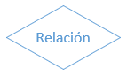
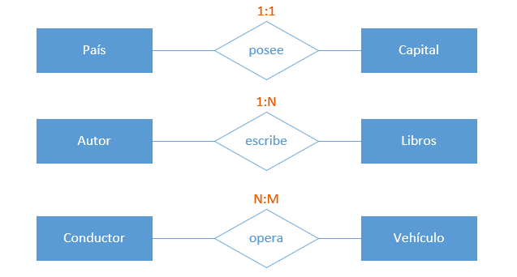
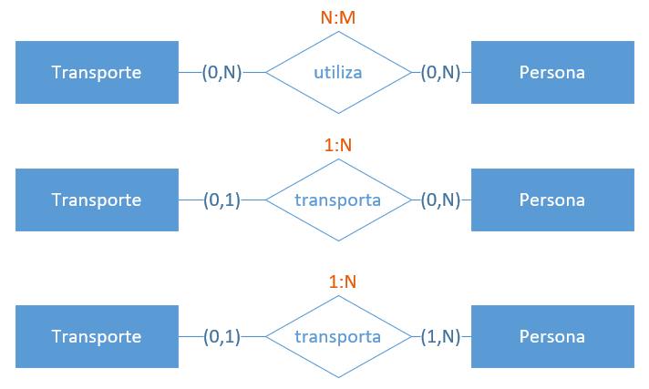

HaB: Introducción a SQL
Por: Fernando Batlle López
Resumen (1)
- Concepto de base de datos: conjunto de información estructurada, que será analizada y manipulada.
- Diferencias entre BBDD y ficheros.
- Conceptos fundamentales de una BD: atributo, tupla y tabla.
- Diferentes clasificaciones.
Resumen (2)
- Bases de datos relacionales.
- Componentes de las bases de datos: Datos, Metadatos, SGBD.
- Control de usuarios.
- Las relaciones de las bases de datos: cocepto CLAVE.
- Cómo mantener consistentes los datos: RESTRICCIONES.
Resumen (3)
- Los actores de las bases de datos.
- Concepto de SQL: DDL y DML.
- Concepto de modelo.
- Tipos de modelo.
- Fases diseño de una base de datos: diseño conceptual, diseño lógico y diseño físico.
Diseño conceptual
Modelo Entidad-Relación
¡Uno de los que vamos a usar en este curso!
Características
Capta las relaciones entre entidades del mundo real (similar al modelo de red).
Se diferencia del modelo de red en que no está ligado a una estructura física de datos.
Diseño de más alto nivel, más próximo al usuario y más alejado del diseño físico de la BD.
Se compone de:
- Entidades: personas, lugares, objetos...
- Atributos: características de esas entidades (nombres, modelo,...).
Diagrama entidad-relación (DER)
Tipo de diagrama de flujo que ilustra cómo las "entidades", como personas, objetos o conceptos, se relacionan entre sí dentro de un sistema
Emplean un conjunto definido de símbolos, tales como rectángulos, diamantes, óvalos y líneas de conexión para representar la interconexión de entidades, relaciones y sus atributos.
Uso del Diagrama entidad-relación
- Diseño de bases de datos.
- Solución de problemas de bases de datos.
- Sistemas de información empresarial.
- Reingeniería de procesos de negocio (BPR).
- Educación.
- Investigación.
Componentes del Diagrama entidad-relación
Entidad (1)
Algo que se puede definir, como una persona, objeto, concepto u evento, que puede tener datos almacenados acerca de este.
Se representan en forma de rectángulos.
Se usan sustantivos para definirlos.
Ejemplos: persona, tienda, producto.
Entidad (y 2)
Tipos:
- Entidad fuerte (o Entidad a secas): no depende de nadie. P.e: Persona
- Entidad débil: depende de otra entidad para existir. Por ejemplo, un empleado depende de que exista una empresa

Claves de entidad
Atributo que define únicamente una entidad en un conjunto de entidades.
- Superclave: un conjunto de atributos (uno o más) que juntos definen una entidad en un conjunto de entidades
- Clave candidata: es una superclave mínima, es decir, contiene el menor número posible de atributos para seguir siendo una superclave. Un conjunto de entidades puede tener más de una clave candidata.
- Clave primaria: clave candidata seleccionada por el diseñador de la base de datos para identificar únicamente al conjunto de entidades.
- Clave extranjera o foránea: Identifica la relación entre las entidades.
Relación
Cómo las entidades interactúan o se asocian entre sí.
Se representan en forma de diamantes.
Se usan verbos para definirlos.
Ejemplos: Matricularse (entre las entidades Curso y Estudiante).
Atributo (1)
Una propiedad o característica de una entidad.
Se representan en forma de óvalo o circulo.
Se usan adjetivos, adverbios y sustantivos para definirlos.
Ejemplos: Rubio, Nombre (en la entidad Persona).
Atributo (y 2)
Tipos:
- Atributo simple (o simplemente Atributo)
- Atributo clave: hace referencia a una clave primaria de entidad
- Atributo derivado: p.e. la edad se calcula a partir de la fecha de nacimiento
Cardinalidad (1)
Define los atributos numéricos de la relación entre dos entidades o conjuntos de entidades.
Tipos:
- Uno a uno (1:1): País - Capital
- Uno a muchos (o muchos a uno) (1:N): Autor - Libros
- Muchos a muchos (N:M): Vehículo - Conductor
Cardinalidad (y 2)
La Participación de una entidad
La participación de una entidad también se conoce como cardinalidad de la entidad dentro de una relación.
Una misma entidad puede tener distinta cardinalidad dentro de distintas relaciones.
Para obtener la participación, se debe fijar una ocurrencia concreta de una entidad y averiguar cuántas ocurrencias de la otra entidad le corresponden como mínimo y como máximo.
Después realizar lo mismo en el otro sentido.
Se representarán entre paréntesis y con letras minúsculas en el lado de la relación opuesto a la entidad cuyas ocurrencias se fijan.
Ejemplos de Participación
¿Cuál es la correcta?
Todas son. Cada una representa la solución a un problema.
Ejemplos de Participación
¿Cuál es la correcta?
La primera, por ejemplo, puede representar, los transportes de un día en concreto.
La segunda, que una persona en concreto sólo puede estar en un transporte en un momento determinado (o caminando).
Y la tercera, muestra que, para que un transporte se ponga en movimiento, debe tener al menos una persona.
Limitaciones de los modelos y diagramas ER
- Exclusivo para datos relacionales: su propósito es solo mostrar las relaciones (la estructura relacional).
- Inadecuado para datos no estructurados: uso limitado si los datos no se pueden representar bajo campos, filas y columnas.
- Complicaciones al realizar una integración con una base de datos existente.
Cómo dibujar un diagrama ER básico
- Propósito y alcance: definen el propósito y el alcance de lo que estás analizando o modelando.
- Identificar las entidades involucradas. Representarlas con rectángulos y etiquertarlas con sustantivos.
- Dibujar las relaciones (diamantes) y emplazarlas entre cada conjunto de entidades relacionadas. Unir cada entidad con la relación con una línea de conexión.
- Detallar las propiedades de las entidades mediante Atributos (óvalos). Especificar cual de sus atributos es Atributo clave.
- Especificar la Cardinalidad: si la relación es uno a uno (1:1), 1 a muchos (1:N) o muchos a muchos (N:M).
Más consejos sobre diagramas ER
- Muestra el nivel de detalle necesario para tu propósito.
- Presta atención a las relaciones o entidades redundantes.
- Presta atención a los vacíos en las relaciones o los atributos o entidades que faltan.
- Asegúrate de que todas tus entidades y relaciones estén etiquetadas.
- Puedes convertir tablas relacionales a diagramas ER, y viceversa.
- Asegúrate de que el diagrama ER admita todos los datos que necesitas guardar.
- Puede haber diferentes enfoques válidos para un diagrama ER. Mientras brinde la información necesaria para su alcance y propósito, es apropiado.
Resumen: Modelo Entidad-Relación
- Modelo Entidad-Relación.
- Definición de Entidad.
- Claves de Entidad: superclave, clave candidata y clave primaria.
- Definición de Relación.
- Definición de Atributo.
- Cardinalidad de las Relaciones.
- Participación de las Relaciones.
- Pasos para definir un Diagrama de Entidad-Relación.
QUIZ 1
En una base de datos relacional, para establecer una relación entre dos tablas, éstas...
- a. han de tener el mismo número de campos
- b. han de tener el mismo número de registros
- c. han de tener un campo común entre ambas
- d. son ciertas las opciones a y c
Correcta: c
QUIZ 2
¿De qué tipo es la relación entre estas dos tablas de la base de datos de una biblioteca?

- a. Uno a muchos
- b. Muchos a muchos
- c. Uno a uno
- d. Ninguna de las anteriores
Correcta: a
QUIZ 3
¿De qué tipo es la relación entre estas dos tablas de la base de datos de un videoclub?

- a. Uno a muchos
- b. Muchos a muchos
- c. Uno a uno
- d. Ninguna de las anteriores
Correcta: b
QUIZ 4
¿Qué es una clave principal?
- a. Una clave principal identifica exclusivamente cada registro almacenado en la tabla
- b. Una clave principal no permite duplicar registros en una tabla
- c. Las dos anteriores son correctas
- d. Ninguna de las anteriores es cierta
Correcta: c
QUIZ 5
De los siguientes campos de la tabla de una base de datos, indica cual podría ser una clave (o llave) primaria (o principal):
- a. Nombre y apellidos de un usuario
- b. Profesión
- c. DNI
- d. Cualquiera de los anteriores
Correcta: c
Caso de estudio: AllTheMoney Bank
Pasos a seguir para diseñar un Diagrama Entidad-Relación
- Propósito y alcance: definen el propósito y el alcance de lo que estás analizando o modelando.
- Identificar las entidades involucradas. Representarlas con rectángulos y etiquertarlas con sustantivos.
- Dibujar las relaciones (diamantes) y emplazarlas entre cada conjunto de entidades relacionadas. Unir cada entidad con la relación con una línea de conexión.
- Detallar las propiedades de las entidades mediante Atributos (óvalos). Especificar cual de sus atributos es Atributo clave.
- Especificar la Cardinalidad: si la relación es 1-1, 1-muchos o muchos a muchos.
Paso 1: Propósito y alcance
Caso de estudio: Propósito y alcance (1)
En este paso, actuaremos como el Actor Analista.
Deberemos consultar al cliente sobre todos los requisitos y necesidades que este sistema debe implementar.
A través de preguntas orientadas, lo primero será describir a grandes rasgos el sistema final.
Caso de estudio: Propósito y alcance (y 2)
Después de una primera ronda de preguntas, hemos sacado las siguientes conclusiones.
- Nuestra banquera quiere montar su propio banco. Quiere comerse el mundo.
- Eso sí, dada su naturaleza, los datos deben estar seguros.
- Además, quiere que cada cliente pueda contratar sus productos y consultar su propio estado y operaciones.
- Por otra parte, también habrá empleados que supervisen las contrataciones. Como los empleados pueden ser además clientes, pueden contratar productos para ellos mismos.
Paso 2: Identificar las entidades involucradas
Caso de estudio: Identificar las entidades involucradas (1)
El primer paso ha sido un éxito. Hemos conseguido definir ¿todas? las funcionalidades necesarias.
¿A lo mejor no está del todo bien definido el alcance?
Caso de estudio: Identificar las entidades involucradas (2)
Nuestra banquera quiere montar su propio banco. Quiere comerse el mundo.
Eso sí, dada su naturaleza, los datos deben estar seguros.
Detectamos alguna entidad en estas 2 frases?
No se detectan entidades
Caso de estudio: Identificar las entidades involucradas (3)
Además, quiere que cada cliente pueda contratar sus productos y consultar su propio estado y operaciones.
Aquí sí ya detectamos alguna Entidad.
- Cliente. Alguien que va a usar el sistema. Vamos a denominarla "Usuario".
- Contratar sus productos. Probablemente una de las entidades más importantes del sistema! Entidad "Producto".
- Consultar su propio estado y operaciones. Parece un concepto demasiado amplio. Temporalmente la vamos a denominar "Operación"
Esta frase sí que ha resultado exitosa.
Caso de estudio: Identificar las entidades involucradas (4)
Por otra parte, también habrá empleados que supervisen las contrataciones. Como los empleados pueden ser además clientes, pueden contratar productos para ellos mismos.
Veamos si podemos encontrar alguna Entidad.
- También habrá empleados. Otro actor dentro del sistema. Denominémoslo "Empleado".
- pueden contratar productos para ellos mismos. Vamos, va a ser un "Usuario" también, pero va a poder hacer más operaciones.
- Parece que tiene sentido replantearse el primer punto. Al fin y al cabo, un empleado es un "Usuario" con información extra.
- Por tanto, en vez de "Empleado", denominaremos a esta entidad "Información Empleado".
Caso de estudio: Identificar las entidades involucradas (y 5)
Toca representarlas.

Paso 3: Dibujar las relaciones
Caso de estudio: Dibujar las relaciones (1)
Al igual que en el anterior paso, exploramos minuciosamente el alcance para exponer las relaciones entre entidades.
Cada cliente pueda contratar sus productos. Entre la Entidad "Usuario" y "Producto", la relación es "contratar".
Y la relación entre "Producto" y "Operación" puede ser realizar.
Sólo queda "Información Empleado", que se enlaza con "Usuario" mediante la relación "ampliar"
Caso de estudio: Dibujar las relaciones (2)

Caso de estudio: Dibujar las relaciones (3)

Caso de estudio: Dibujar las relaciones (y 4)

Paso 4: Detallar los atributos
Caso de estudio: Detallar los atributos
En este punto, pausaremos el rol de diseñador, y volveremos al rol analista.
Se debe preguntar concienzudamente al cliente qué información desea almacenar para cada entidad.
Caso de estudio: atributos "Usuario"
¿Qué información describe (en este sistema) al "Usuario"?
Propiedades obtenidas de la conversación con el cliente:
- Nombre
- Apellido 1
- Apellido 2
- Fecha de nacimiento
- DNI
Caso de estudio: atributos "Usuario"
¿Qué información describe (en este sistema) al "Usuario"?
Propiedades especificas de la propia experiencia del analista / diseñador:
- Nombre Completo (atributo derivado de nombre, apellido 1 y Apellido 2)
- Empleado
- Activo
- Notas
- Fecha expedición DNI
- Fecha validez DNI
Caso de estudio: atributos "Usuario"
Definir las superclaves, claves candidatas y clave primaria
De los atributos listados anteriormente, ¿cuáles son superclaves?
- Nombre Completo
- Nombre, apellido 1, apellido 2
- DNI
Caso de estudio: atributos "Usuario"
Definir las superclaves, claves candidatas y clave primaria
De las anteriores, ¿cuáles son claves candidatas?
Nombre CompletoNombre, apellido 1, apellido 2- DNI
Caso de estudio: atributos "Usuario"
Definir las superclaves, claves candidatas y clave primaria
De las dos restantes, la mejor es DNI:
- Identifica inequívocamente al usuario. El email puede cambiar o ser compartido.
- Al cambiar (email), se debe actualizar en todas las claves foráneas (otras entidades).
Tenemos nuestra clave primaria!
Pero...
Caso de estudio: atributos "Usuario"
Uno de los principios del modelo Entidad-Relación, es que si se puede, las entidades sean lo más concisas posibles.
DNI tiene sentido que sea una entidad aparte de la entidad "Usuario".
Es un documento, con su propia información.
En este ejemplo sólo vamos a guardar la versión actual del DNI, pero en un futuro, se puede desear almacenar un histórico de todos los DNI proporcionados por el Usuario.
Si hubiera un histórico, ¿cómo se almacenaría esta información en la Entidad Usuario?
Caso de estudio: Actualización diagrama
Nueva relación: DNI

Caso de estudio: Actualización diagrama
El diseño de un diagrama Entidad-Relación es un proceso iterativo, que muchas veces implica volver a pasos anteriores.
Y que acarrean problemas...
Recordad que se había seleccionado DNI como clave primaria de la entidad Usuario.
Pero ya no está... Y Email no es una buena opción.
Podríamos usar nombre completo, pero si el nombre es muy común, podrían existir dos usuarios con el mismo nombre. Por tanto no es factible.
Nueva clave candidata: nombre completo + fecha de nacimiento. Es poco probable que se de este caso. Pero, es un engorro de clave.
Caso de estudio: Actualización diagrama
¿Qué hacer en estos casos?
Una práctica muy común (y recomendable) es crear un atributo independiente que sirva de identificador.
Gracias a las Restricciones, nunca va a variar y será único.
Y al definirlo como Entero (Integer), es muy legible.
Nuevo atributo y clave primaria. Id
Caso de estudio: Representación de Usuario

Caso de estudio: atributos "DNI"
Ya estaban definidas en Usuario, simplemente las trasladamos a esta entidad
- DNI
- Fecha expedición DNI
- Fecha validez DNI
Sólo falta enlazarla con Usuario a través de una clave foránea:
Id usuario. Que a su vez será una clave primaria.
Puntualización: esta entidad depende de Usuario, por tanto es una Entidad débil.
Caso de estudio: Representación de DNI

Caso de estudio: atributos "Información Empleado"
- Administrador
- Empleado en
- Activo
- Cuenta empleado
- Y como en DNI, añadimos Id usuario, como clave primaria y foránea
Caso de estudio: Representación de Información Empleado

Caso de estudio: atributos "Producto"
La entidad más compleja que hay en este sistema.
¿Qué es un producto?
¿Qué información se debe guardar?
Caso de estudio: atributos "Producto"
Al tratar con el cliente, se toman los siguientes atributos:
- Número de producto (Id)
- Tipo: cuenta, tarjerta (por simplicidad, dos tipos en este caso de estudio)
- Subtipo: si es una cuenta de ahorro o una tarjeta de débito...
- Id usuario
- Activo
- Bloqueado
- Fondos actuales
- Fecha contratación
- CVV (en caso de tarjeta)
- Límite (en caso de tarjeta)
Caso de estudio: atributos "Producto"
Muchos campos, de los cuales no todos siempre estarán "activos", dependiendo del tipo de producto.
¿No tiene más sentido dividirla en varias Entidades?
Desaparece la Entidad "Producto".
Se definen dos nuevas entidades: "Cuenta" y "Tarjeta".
Caso de estudio: Vuelta al diagrama

Se va complicando el diagrama.
Caso de estudio: atributos "Cuenta"
Reorganizamos los atributos
- Número de cuenta (Id)
- Tipo: 'ahorro', 'bursatil', 'infantil', 'autonomo'
- Id usuario
- Activa
- Bloqueada
- Fondos actuales
- Fecha contratación
Caso de estudio: atributos "Tarjeta"
- Número de tarjeta (Id)
- Tipo: 'ahorro', 'bursatil', 'infantil', 'autonomo'
- Id usuario
- Id cuenta
- Activa
- Bloqueada
- Pendiente amortizar
- Fecha contratación
- CVV (en caso de tarjeta)
- Límite (en caso de tarjeta)
Caso de estudio: Representación Cuenta-Tarjeta

Caso de estudio: atributos "Operación"
Esta entidad estaba relacionad con la antigua entidad Producto.
Pero ya no existe, con lo que hay que reconvertirla.
Se generán dos entidades, una para Cuenta y otra para Tarjeta.
Y por simplizidad, seleccionaremos una operación concreta: movimiento.
Por tanto, dos nuevas entidades: Movimiento Cuenta y Movimiento Tarjeta.
Caso de estudio: Vuelta al diagrama

Diagrama final!
Caso de estudio: Atributos Cuenta-Tarjeta

Similares, salvo las claves primarias y el atributo tipo del movimiento Cuenta.
Caso de estudio: Diagrama con atributos

¿Algo raro? Comprobad la relación "utiliza".
Paso 5: Especificar la Cardinalidad
Caso de estudio: Especificar la Cardinalidad
Como punto final en la elaboración del diagrama, se calculará la cardinalidad.
Es decir, en las relaciones entre entidades, cuantas instancias de entidad están relacionadas con el resto de entintades involucradas.
Caso de estudio: Especificar la Cardinalidad
Recordemos:
- Uno a uno (1:1): País - Capital
- Uno a muchos (o muchos a uno) (1:N): Autor - Libros
- Muchos a muchos (N:M): Vehículo - Conductor
Caso de estudio: Especificar la Cardinalidad
Cardinalidad Usuario-DNI

Un Usuario sólo puede tener un DNI válido.
Además ese DNI es sólo para un Usuario. No se aplica a otro Usuario.
Por tanto, la relación es 1 a 1.

Caso de estudio: Especificar la Cardinalidad
Cardinalidad Usuario-DNI
La cardinalidad no sólo se expresa entre entidades, sino que se debe especificar entra cada una de las entidades y la propia relación.
¿Por qué? Porque puede aportar información extra, como por ejemplo si la relación es opcional (se verá más claro en otros ejemplos).
En este caso, la relación global es 1:1, pero, ¿y las relaciones?
El DNI es obligatorio. Un usuario no puede estar en el sistema sin tener un DNI, por temas de seguridad.
Y un DNI no puede existir sin un Usuario (es una entidad débil).
Por tanto, la cardinalidad entre cada una de las entidades y la relación es (1,1).
Caso de estudio: Especificar la Cardinalidad
Cardinalidad Usuario-DNI: representación final

Caso de estudio: Especificar la Cardinalidad
Cardinalidad Usuario-Información Empleado

Un Usuario sólo puede tener un dossier Información Empleado.
Ese dossier, sólo aplica a un Usuario
De nuevo estamos ante una relación 1 a 1.

Caso de estudio: Especificar la Cardinalidad
Cardinalidad Usuario-Información Empleado
A diferencia del DNI, el dossier Información Empleado no es obligatorio.
¿Por qué? Pues porque no todos los usuarios son empleados. Es una relación opcional (0,1).
Pero Información Empleado no puede existir sin un Usuario (1,1).

Caso de estudio: Especificar la Cardinalidad
Cardinalidad Usuario-Cuenta

Un Usuario puede contratar múltiples Cuentas.
Y las Cuentas pueden tener multiples beneficiarios (Usuarios).
Relación N:M.

Caso de estudio: Especificar la Cardinalidad
Cardinalidad Usuario-Cuenta
Normalmente en los bancos, un Usuario normalmente tiene que contratar al menos una Cuenta, pero pueden ser varias (1,N).
Las Cuentas normalmente tienen que tener al menos un beneficiario (1,N).

Caso de estudio: Especificar la Cardinalidad
Cardinalidad Usuario-Tarjeta

Un Usuario puede contratar múltiples Tarjetas.
Pero las Tarjetas son intransferibles (1 único Usuario).
Relación 1:N.

Caso de estudio: Especificar la Cardinalidad
Cardinalidad Usuario-Tarjeta
Un Usuario no tiene porqué contratar Tarjetas, pero si lo desea, puede tener varias (0,N).
Las Tarjetas (entidad débil) necesitan de un Usuario (1,1).

Caso de estudio: Especificar la Cardinalidad
Cardinalidad Cuenta-Tarjeta

Un Cuenta puede tener asociadas múltiples Tarjetas.
Pero cada Tarjeta sólo se enlaza a una única Cuenta.
Relación 1:N.

Caso de estudio: Especificar la Cardinalidad
Cardinalidad Cuenta-Tarjeta
Las Cuentas pueden no tener asociada ninguna Tarjeta (0,N).
Las Tarjetas necesitan de una Cuenta (1,1).

Caso de estudio: Especificar la Cardinalidad
Cardinalidad Cuenta-Movimiento Cuenta

Un Cuenta puede tener multiples Movimientos.
Pero cada Movimiento sólo se enlaza a una única Cuenta.
Relación 1:N.

Caso de estudio: Especificar la Cardinalidad
Cardinalidad Cuenta-Movimiento Cuenta
Cuando se abre una Cuenta, te obligan a hacer un ingreso. Por tanto siempre va a haber al menos un Movimiento Cuenta (1,N).
No va a haber Movimientos sin Cuenta (1,1).

Caso de estudio: Especificar la Cardinalidad
Cardinalidad Tarjeta-Movimiento Tarjeta
Igual que la anterior relación, salvo que no hay un movimiento inicial obligatorio (0,N).

Paso 6: ¡Disfrutad de vuestro duro trabajo!
Caso de estudio: Diagrama final
Hemos finalizado el diagrama!

¿Preguntas?
Muchas gracias por vuestra atención.